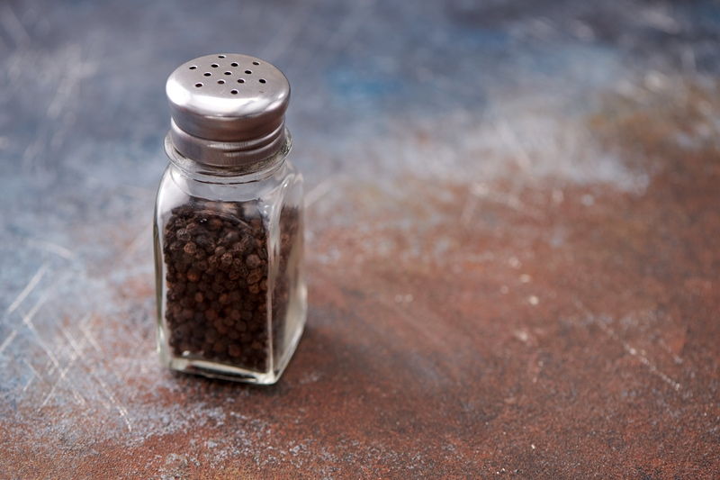
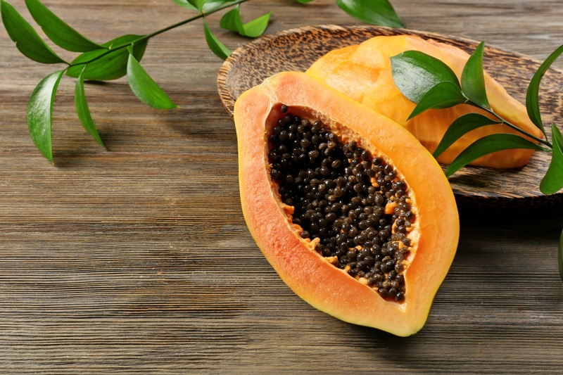

Papaya Peppercorns | Black Pepper Replacement
Papaya seeds have a unique flavor, one that you might not expect from a mildly sweet fruit. The seeds have a peppery, mustard-wasabi taste. But here’s the inside scoop…the larger the papaya, the sharper and stronger the flavor is. On the flip side, smaller papayas tend to have seeds with a milder taste.

Eating Them Raw…
Papaya seeds can actually be eaten raw, right out of the cavity of the fruit, but it is recommended to eat only 1-2 seeds a day for the first few weeks. Eating too many at once could end up overwhelming your taste buds and digestive system.
They need to be chewed or broken down in some way, otherwise they will just pass on through. If you want to go this route you can always douse them in a little raw honey to help the “medicine go down.” But if this isn’t your cup of tea, you can dry them and grind them up to create a black pepper replacement.
One of the things that drew me to papaya was the seeds, thanks to my own body’s intuition. I have been working on supporting my liver, and after I dried the seeds, not knowing exactly I was going to do with them, I came to learn that in traditional Chinese and Japanese medicine, papaya seeds are used to detoxify and strengthen the liver. I love how the body knows what it wants. It can just be difficult to maneuver through the false cries for french fries and Ding-Dongs. Enjoy and many blessings to you and your liver, amie sue
Ingredients:
Preparation:
Dehydration method:
- Remove the seeds from the center of the papaya and place them in a mesh strainer with small enough holes so they don’t fall through.
- Rinse in warm water, removing any bits of papaya flesh from them.
- Line the dehydrator tray with a non-stick sheet and spread the seeds out in a single layer.
- You can use the mesh sheet that comes with the machine if the holes are really small. You don’t want the seeds to fall through as they are drying.
- Dry at 115 degrees (F) for 8-16 hours, until very dry. They resemble black peppercorns.
- Remove and allow to cool before grinding.
- Use just like peppercorns in a pepper mill, or grind with a mortar and pestle.
- You can also grind them down in a spice grinder or small personal blender.
- Place in an airtight container and label.
- Store in a dark, cool place.
Culinary Explanations:
- When working with fresh ingredients, it is important to taste test as you build a recipe. Learn why (here).
- Don’t own a dehydrator? Learn how to use your oven (here). I do, however, truly believe that it is a worthwhile investment. Click (here) to learn what I use.

© AmieSue.com